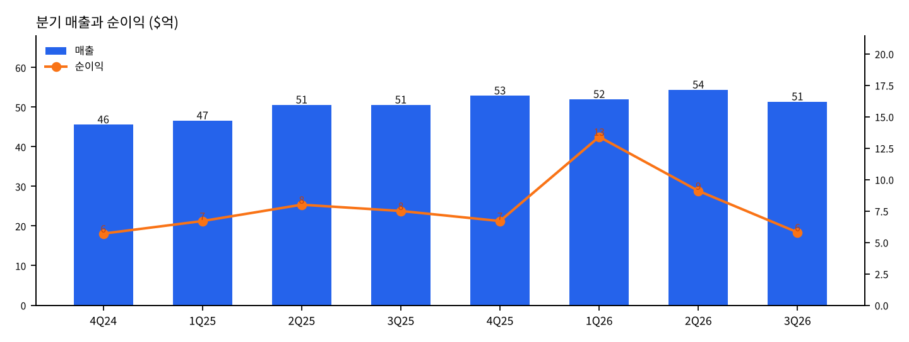
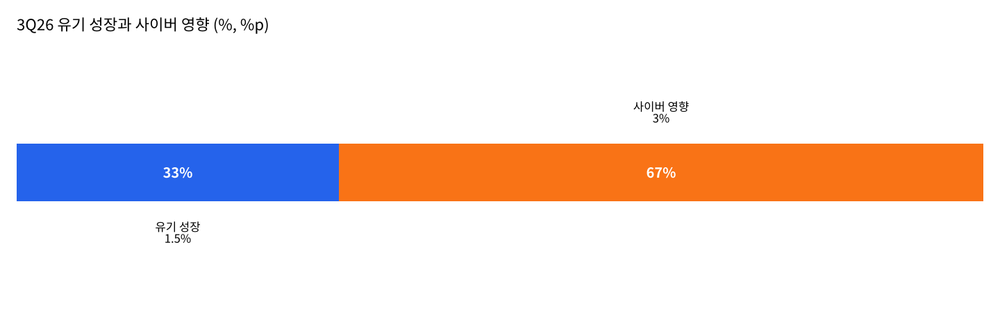
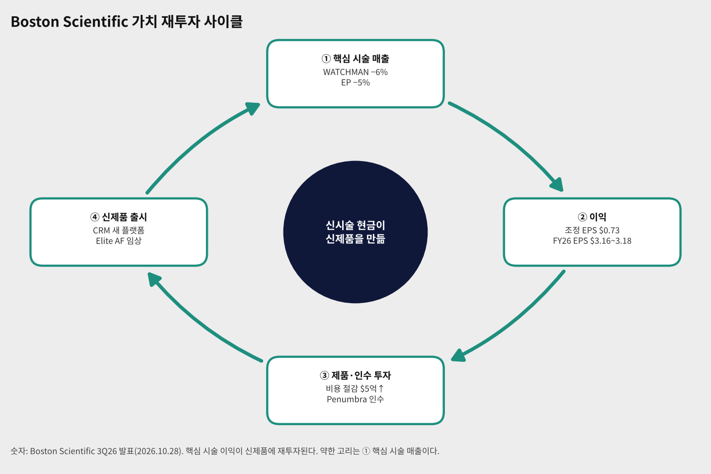

Boston Scientific은 심장·혈관·비뇨·내시경 기기를 팔고, 새 시술(PFA·WATCHMAN)이 성장을 끌어 왔다. 지금은 경쟁과 사고로 성장이 꺾였다.
| 항목 | 내용 |
|---|---|
| 종목 | Boston Scientific (BSX) · NYSE · 의료기기 · 매사추세츠 말버러 |
| 최근 분기(3Q26) | 매출 $51.38억, 조정 EPS $0.73 |
| 핵심 상품 | Farapulse(PFA), WATCHMAN, 스텐트·카테터, 비뇨기 기기 |
| 직원 수 | 약 59,000명(트레이딩뷰) |
| 멀티플 | PER·PEG·P/S는 08~10 항목 표 참조 |
| 직책 | 인물 | 역할·특징 |
|---|---|---|
| 회장·CEO | 마이크 마호니(Mike Mahoney) | 2028년 성장 회복 전략을 설명 |
| CFO | (확인 필요) | 회사 공개 자료 기준 확인 필요 |
경영 스타일: 혁신 제품 중심. 새 시술 제품에 투자하고 인수로 영역을 넓힌다. 이번에는 구조조정으로 비용을 줄이는 방향이다.
전기 펄스로 부정맥을 치료하고(PFA) 좌심방을 막아 뇌졸중을 막는 제품이다.
CRM 새 플랫폼, 제품 업그레이드, 신규 사업으로 성장 회복을 목표로 한다.
다음 실적발표는 세 가지 질문에 답하는 자리다.
1. 사이버 사고 영향이 4Q로 끝나나?
2. WATCHMAN·EP 경쟁 압력이 어디까지인가?
3. 구조조정이 마진을 지키나?
한 줄 판정 규칙: 첫 질문(사이버 사고)이 4Q에 끝나면 약한 고리인 ① WATCHMAN·EP 수요 문제만 남는다고 본다.
일정: 4Q26 실적 발표는 2027.02.03 예정(트레이딩뷰). 2027 가이던스가 함께 나온다.
| 분기 | 매출 | 순이익 | EPS | 조정 EPS | 특이 사항 |
|---|---|---|---|---|---|
| 4Q24 | $45.6억 | $5.7억 | 0.38 | 0.70 | |
| 1Q25 | $46.6억 | $6.7억 | 0.45 | 0.75 | |
| 2Q25 | $50.6억 | $8.0억 | 0.53 | 0.75 | |
| 3Q25 | $50.6억 | $7.5억 | 0.50 | 0.75 | |
| 4Q25 | $52.9억 | $6.7억 | 0.45 | 0.80 | |
| 1Q26 | $52.0억 | $13.4억 | 0.90 | 0.80 | |
| 2Q26 | $54.4억 | $9.1억 | 0.61 | 0.86 | |
| 3Q26 | $51.4억 | $5.8억 | 0.40 | 0.73 | 사이버 사고로 성장 약 3%p·EPS $0.07 감소 |
매출은 트레이딩뷰 스캐너의 분기 총매출이라 회사가 발표한 순매출과 다를 수 있다. 2026년 주식분할이 반영된 값이다. 매출·순이익·EPS(GAAP 희석)는 트레이딩뷰 스캐너, 조정 EPS는 트레이딩뷰 실적 페이지의 Reported 값이다. 분기 정렬은 오래된 분기→최신이다.

흐름 요약: 최근 분기 매출은 $51.4억로 전년 동기 $50.6억 대비 +1.6%, 순이익은 $5.8억(전년 $7.5억)다. 최근 4분기 GAAP EPS는 $2.36, 조정 EPS는 $3.19다.
| 항목 | 내용 | 3Q26 값 | 비고 |
|---|---|---|---|
| 유기 성장 | 보고·운영·유기 동일 | 1.5% | 가이던스 3~5% |
| 사이버 사고 영향 | 성장 깎임 | 3.0%p | 회사 추정(약 3%p) |

사이버 사고가 없었다면 성장률은 4.5% 안팎(내 계산)으로 가이던스 하단 수준이었다.
Boston Scientific은 혁신 의료기기로 환자 삶의 질을 높이는 것을 목표로 한다.
| 축 | 내용 |
|---|---|
| 제품 | Farapulse, WATCHMAN |
| 회복 | 2028년 성장 복귀 |
| 비용 | 3년 $5억 절감 |

| 이동평균 | 값 | 종가 대비 | 위치 |
|---|---|---|---|
| 5일선 | $43.57 | -1.0% | 종가 아래 |
| 20일선 | $44.02 | -2.0% | 종가 아래 |
| 50일선 | $43.86 | -1.6% | 종가 아래 |
| 100일선 | $45.40 | -5.0% | 종가 아래 |
| 200일선 | $53.25 | -19.0% | 종가 아래 |
52주 고가 $101.91(2025-12-01)·저가 $39.57(2026-10-28) 범위에서 종가 $43.15는 모든 이동평균선 아래이고.
| 규칙 | 기준 | 현재 값 | 신호 |
|---|---|---|---|
| 장기 추세 필터 | 종가 vs 200일선 | $43.15 < $53.25 | 매도 |
| 중장기 교차 | 50일선 vs 200일선 | $43.86 < $53.25 | 매도 |
| 단기 교차 | 20일선 vs 50일선 | $44.02 > $43.86 | 매수 |
| 돈키언 채널 | 55일 고가 $49.27 / 저가 $39.57 | 중간값 $44.42 아래 | 매도 |
| 1개월 모멘텀 | 21거래일 수익률 | -3.1% (기준 $44.51) | 매도 |
| 3개월 모멘텀 | 63거래일 수익률 | -14.3% (기준 $50.37) | 매도 |
| 6개월 모멘텀 | 126거래일 수익률 | -24.5% (기준 $57.15) | 매도 |
| 12개월 모멘텀 | 252거래일 수익률 | -56.5% (기준 $99.22) | 매도 |
| 종합 (8개 평균) | -0.75 | 강한 매도 |
해석: 매수 신호 1개(단기 교차), 매도 신호 7개(장기 추세 필터, 중장기 교차, 돈키언 채널, 1개월 모멘텀, 3개월 모멘텀, 6개월 모멘텀, 12개월 모멘텀). CTA 점수 -0.75(강한 매도). 14일 ATR $1.76 (4.1%), 52주 고가 $101.91 · 저가 $39.57.
| 가격 | 기준 | 무엇이 바뀌나 |
|---|---|---|
| $99.22 | 12개월 모멘텀 기준가 | 종가가 이 가격 위면 12개월 신호 매수 |
| $57.15 | 6개월 모멘텀 기준가 | 종가가 이 가격 위면 6개월 신호 매수 |
| $53.25 | 200일선 | 종가가 이 선 위/아래인지로 장기 추세 신호가 바뀜 |
| $50.37 | 3개월 모멘텀 기준가 | 종가가 이 가격 위면 3개월 신호 매수 |
| $49.27 | 55일 고가 | 돌파 시 채널 상단 갱신 |
| $44.51 | 1개월 모멘텀 기준가 | 종가가 이 가격 위면 1개월 신호 매수 |
| $44.42 | 돈키언 중간값 | 55일 채널 중간값 위/아래로 신호가 바뀜 |
| $39.57 | 55일 저가 | 이탈 시 채널 하단 갱신 |
가격 수준은 신호가 바뀌는 기준선일 뿐 진입·청산 가격 제안이 아니다. 20일/50일 교차는 이동평균 자체가 움직여 단일 가격으로 표시하지 않았다. 일봉·주봉은 종가 기준 직접 계산(고저 데이터 미사용)이다.
| 악재 요인 | 내용 | 강도 |
|---|---|---|
| 사이버 사고 | 3Q 성장 약 3%p 감소, 4Q 2~3%p | 높음 |
| WATCHMAN·EP 경쟁 | 매출 −6%, −5%, 새 경쟁자 | 높음 |
| 중국 가격 | 2027년 매출·마진 추가 부담 | 중간 |
| 티커 | 회사 | PER(TTM) | PEG | P/S | EPS 성장(YoY) |
|---|---|---|---|---|---|
| BSX | Boston Scientific | 13.5배 | 1.66 | 2.97배 | +8% |
| SYK | Stryker | 33.6배 | 1.46 | 4.65배 | +23% |
| MDT | Medtronic | 24.8배 | 2.07 | 3.50배 | +12% |
| ABT | Abbott | 38.6배 | – | 3.77배 | -66% |
| EW | Edwards Lifesciences | 61.3배 | – | 9.12배 | -27% |
비교 결론: Boston Scientific의 PER 13.5배는 Stryker·Medtronic·Abbott·Edwards보다 낮다. PEG 1.66는 Stryker(1.46)보다 높다.
현금·부채는 트레이딩뷰 스캐너 값이다. 부채가 현금보다 크다.
| 지표 | 값 | 출처 | 해석 |
|---|---|---|---|
| 현금·단기투자 | $7억 | 트레이딩뷰 스캐너(최근 분기) | |
| 총부채 | $120억 | 트레이딩뷰 스캐너(최근 분기) | |
| 순부채(부채−현금) | $113억 | 내 계산 | 현금 대비 부채 부담 |
| 잉여현금흐름(TTM) | $33억 | 트레이딩뷰 스캐너 | |
| TTM 매출 | $211억 | 트레이딩뷰 스캐너 |
| 기준 | 매출 | P/S | 비고 |
|---|---|---|---|
| 내 계산(종가 ÷ 최근 4분기 매출 합계) | $210.7억 | 2.97배 | 시총은 정렬용 데이터에서만 사용 |
| 동종(트레이딩뷰) | – | SYK 4.65배 · MDT 3.50배 · ABT 3.77배 · EW 9.12배 | 11.19 |
해석: 영업현금흐름으로 부채를 갚으면서 인수(Penumbra 등)를 진행 중이다(내 해석, 인수 세부는 확인 필요).
EBITDA는 영업활동의 현금 창출력을 보는 지표이고, PEG는 PER을 EPS 성장률로 나눈 값이다. EBITDA·FCF는 트레이딩뷰 TTM 값이다.
| 지표 | 값 | 산출 |
|---|---|---|
| EBITDA(TTM) | $60억 | 트레이딩뷰 스캐너 |
| EBITDA 마진 | 28.4% | EBITDA ÷ TTM 매출(내 계산) |
| FCF 마진 | 15.6% | FCF ÷ TTM 매출(내 계산) |
| PER(GAAP TTM) | 18.3배 | $43.15 ÷ $2.36 |
| PER(조정 TTM) | 13.5배 | $43.15 ÷ $3.19 |
| 방식 | PER | EPS 성장률 | PEG | 판정 |
|---|---|---|---|---|
| 조정 EPS (TTM $3.19) | 13.5배 | +8% ($2.95 → $3.19) | 1.66 | 기준 초과 |
| GAAP EPS (TTM $2.36) | 18.3배 | +27% ($1.86 → $2.36) | 0.68 | 투자 적격 |
판정: 조정 EPS 기준 PEG 1.66 → 1.0 초과 PEG 기준은 1.0 이하 투자 적격, 0.5 이하 적극 매수다. EPS 성장률은 최근 4분기 EPS 합계를 직전 4분기 합계와 비교한 값(내 계산)이고, 일회성 항목이 있으면 조정 EPS 행을 함께 본다.

Boston Scientific의 사이클: 핵심 시술 이익이 신제품·인수에 재투자돼 다음 성장 제품을 만들고, 그 제품이 다시 매출을 키우는 순환이다.
| 고리 | 현재 숫자·근거 |
|---|---|
| ① 핵심 시술 매출 | 3Q26 WATCHMAN −6% · EP −5% |
| ② 이익 | 조정 EPS $0.73(−3%) · FY26 조정 EPS $3.16~3.18 |
| ③ 제품·인수 투자 | 3년 $5억 넘는 비용 절감 · 인수 진행(세부 확인 필요) |
| ④ 신제품 출시 | WATCHMAN Elite AF 임상 시작 · CRM 새 플랫폼 예정 |
사이클의 특징: 약한 고리는 ① 핵심 시술 매출이다(WATCHMAN·EP가 줄고 있다). "(내 해석)"은 보고서 수치가 아닌 해석이다.